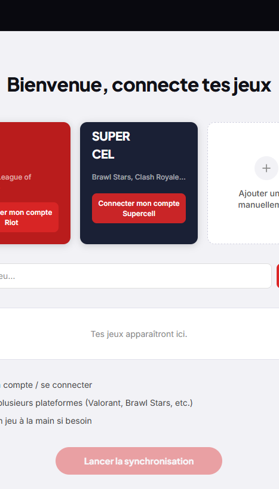
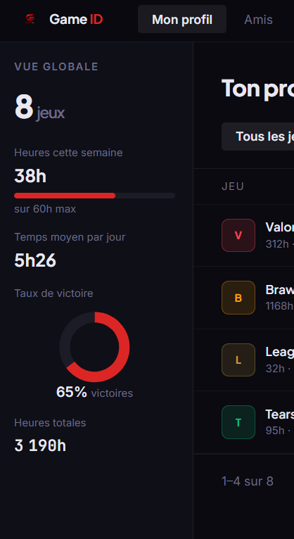
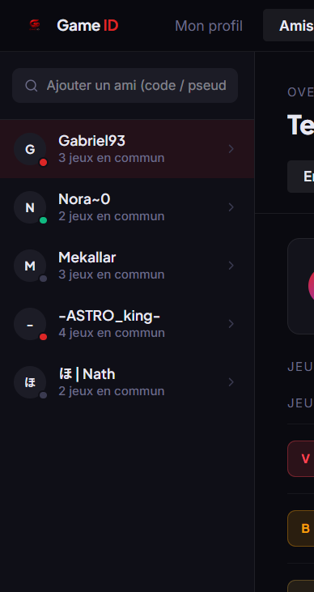

Game ID centralise tes jeux, tes statistiques et tes succès sur toutes les plateformes. Découvre ton profil complet, compare tes performances avec tes amis et partage ta passion dans un espace premium et social.
L’application permet à chaque joueur de créer un compte personnel et d’y connecter facilement tous ses jeux, qu’ils viennent de Riot, Supercell, Steam ou d’autres plateformes. Une fois les jeux synchronisés, l’app centralise automatiquement toutes les informations importantes : les quêtes en cours, les trophées et succès débloqués, les records personnels, le temps total passé sur chaque jeu, les parties gagnées ou perdues, ainsi que la moyenne de jeu par semaine.
L’utilisateur obtient ainsi une vision complète et unifiée de sa vie de gamer, sans avoir à naviguer entre plusieurs applications. L’aspect social est tout aussi important : chacun peut ajouter des amis, comparer ses statistiques avec eux, voir les jeux en commun et suivre leurs performances.
Je joue à Valorant, Brawl Stars, Fortnite… Je passe d’un jeu à l’autre sans jamais savoir combien de temps je joue vraiment. Grâce à Game ID, j’ai enfin une vision claire : mes heures, mes progrès, mes records… et je peux comparer tout ça avec mes potes sans avoir mes stats éparpillées partout !
Je joue surtout le soir pour me détendre, sur Switch, mobile et PC. Avant, je perdais le fil : rien n’était synchronisé, j’oubliais mes jeux commencés… Game ID m’aide à suivre mes habitudes, garder mes records et comparer avec mes amis sans pression. Tout est centralisé, enfin.


